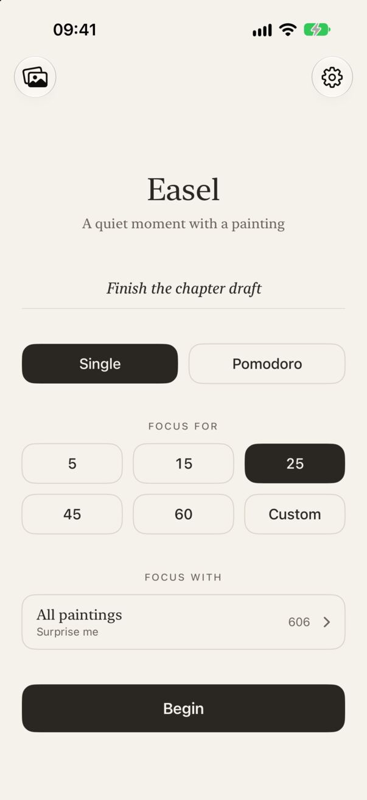

I 霧が晴れるとき
集中すると、霧が晴れていく
セッションのたびに、やわらかく漂う霧の向こうに新しい絵が掛けられます。時間が経つにつれて霧は中央から外側へと晴れていくので、時計を見なくても進み具合を感じられます。
- 0:00で完全に公開。集中したこと、作品名、画家、制作年を記した美術館のキャプションが添えられます。
- 通信を待つことはありません。絵はセッションを始める前に準備されます。
- アプリを離れても大丈夫。iPhoneをロックしていても、タイマーは正確に時を刻みます。
iPhone & iPadのための集中タイマー
集中する時間を決めましょう。作業しているあいだに、メトロポリタン美術館の名画が霧の中からゆっくりと姿を現し、0:00になると完全に公開されて、あなたのものになります。


無料、広告なし。iPhoneとiPadに対応。

展示ガイド
ポイントも、育成キャラクターも、騒がしさもありません。あるのは、作業に向き合っているあいだ、ゆっくりと姿を見せていく一枚の絵だけです。
I 霧が晴れるとき
セッションのたびに、やわらかく漂う霧の向こうに新しい絵が掛けられます。時間が経つにつれて霧は中央から外側へと晴れていくので、時計を見なくても進み具合を感じられます。


II あなたのギャラリー
完了したセッションの絵は、あなただけのギャラリーに飾られます。数週間もすれば、あなたが時間を注いできたことの静かな記録になっていきます。

III 自分らしく
取り組んでいることを書くか、勉強、執筆、読書、創作などのテーマを選びましょう。そして、シングルのセッションかポモドーロのセットを、5分から2時間のあいだで選びます。


IV 数字で見る集中
集中した時間、手にした作品、最長の連続記録。1週間をひと目で見渡せるグラフと、集中した日がすべて記されたカレンダーで確かめられます。

V アプリの外でも
今日の名画ウィジェットは、毎朝霧に包まれた状態で始まります。集中するたびに少しずつ晴れていき、1日の目標に届くと完全に姿を現します。

VI 昼も、夜も
昼は明かりに照らされたあたたかな壁、夜遅くのセッションにはろうそくの灯るチャコールの部屋。どちらかを選ぶことも、iPhoneの設定に合わせることもできます。


VII パトロン
Easelは無料で、広告もサブスクリプションもなく、ひとりの開発者がつくっています。もし毎日に少しの穏やかさを届けられているなら、一度きりの贈り物が開発を続ける支えになります。贈り物で何かが解除されることはありません。Easelのすべては、もうあなたのものだからです。
アプリを良くする、小さく丁寧なひと筆のために。
次に描くもののための、新しい色。
作品をまるごと壁に掛ける。真のパトロンの贈り物。
ご来館の皆さまへ
図解つきのステップごとのガイドと、よく寄せられる質問への答えをご用意しました。アプリの中で迷ったときは、ここに戻ってきてください。
ただいま展示中
Easel：集中タイマー＆アート。iPhone・iPad対応、iOS 17以降。